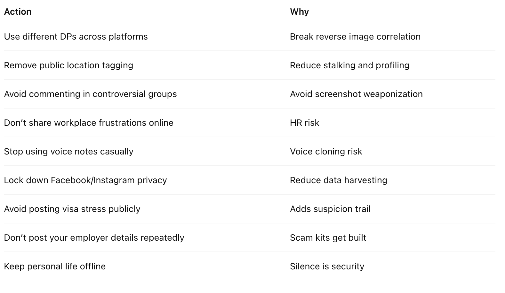

Disclaimer: I am not affiliated with USCIS, any government agency, any employer/workplace investigation team, or any law firm/attorney office. I am not providing legal, immigration, or professional advice. This post is written purely for awareness and community safety. All names, characters, stories, and scenarios mentioned in this article (including Rajesh, Priya, Vikram, or any other individuals) are completely fictional and are not based on any real person. Any resemblance to actual individuals—living or dead—is purely coincidental. For legal or immigration matters, please consult a qualified attorney or licensed professional.
"In the old world, you needed enemies. In the new world, your own posts are enough."
People think their biggest threat is layoffs. Or inflation. Or AI replacing jobs. Or USCIS delays.
No.
Those are external storms you can see coming. You prepare. You pivot. You survive.
The real storm is internal. Silent. Self-inflicted.
It's the trail you leave behind—daily—like a sleepwalking traveler dropping jewelry on the road, completely unaware that someone is following behind, collecting every piece, building a case file with your own evidence.
Your digital footprint is not your identity.
It is your future liability report.
And you're the one writing it. Every. Single. Day.
The AI Era: The New Terror
In the past, your content could expose you.
Now it can become a weapon.
AI can generate:
a fake video of you saying “I do fake payroll”
a fake audio of you insulting your manager
a fake screenshot of you joining illegal consulting groups
a fake email from your account tone
And you will spend months proving innocence.
While your reputation bleeds quietly.
“In the AI era, truth is slow. But fake content spreads at WiFi speed.”
The Hard Truth: Plausibility Is Enough
People don’t need proof to ruin you. They need believability. And your digital trail provides believability. That’s why this matters.
How to Ruin Yourself in 30 Days
If you want to destroy your peace, do this:
✅ Use same DP everywhere
✅ Comment emotionally on political posts
✅ Join 25 WhatsApp groups
✅ Fight with strangers online
✅ Post “motivational quotes” while mentally collapsing
✅ Share your office location
✅ Post your child’s school name
✅ Post your travel plans
✅ Post your employer frustrations
✅ Post your visa anxiety
Congratulations.
You are now searchable, trackable, clonable, and exploitable.
THE PROSECUTOR YOU'RE BUILDING FOR FREE
You wake up. Check WhatsApp. Post an Instagram story. Comment on LinkedIn. Tweet your opinion. Share a meme on Facebook.
Congratulations. You've just testified against yourself. In twelve different databases. With timestamps. With location data. With facial recognition tags. With AI sentiment analysis.
All cross-referenced. All permanent. All searchable.
And you did it voluntarily. For free. Because of FOMO.
Your Digital Footprint Map

The Result: One reverse image search = Your entire life exposed in 30 seconds.
The Truth: 73% of Indian immigrants use the same photo on LinkedIn and Facebook. 99.2% of them can be fully mapped in under 20 seconds.
You're in that 73%. Aren't you?
RAJESH'S H-1B NIGHTMARE
Rajesh from Hyderabad got his H-1B in 2022. Big celebration. Updated LinkedIn: "Blessed to start my journey in the USA 🇺🇸🙏"
Instagram story: Photo at SFO airport with American flag emoji.
Facebook: "New chapter begins! #AmericanDream #Grateful"
Same professional headshot across all platforms.
Three years later, H-1B renewal interview:
Officer opens thick folder: "Mr. Rajesh, can you explain this Reddit comment from October 2023?"
Rajesh's mind went blank. Reddit? I barely use Reddit.
Officer reads: "This H-1B system is modern slavery. They own you. Can't even switch jobs without fear."
"That... that was just venting in a support group—"
"And this Twitter reply: 'US immigration system is designed to exploit skilled workers.'"
"And this Instagram story from January 2024, checked in at a coffee shop in San Jose during your work hours. Your employer is in Fremont. Were you working remotely without authorization?"
"Your LinkedIn profile says 'Exploring entrepreneurship.' Are you engaged in unauthorized employment?"
The officer closed the folder. "We have concerns about your commitment to visa terms, possible unauthorized activities, and statements suggesting dissatisfaction. This may take 6-12 months."
H-1B denied four months later.
How did they find everything? One reverse image search of his LinkedIn photo. 30 seconds.
Eight years of building his life in the US. Gone.
His wife devastated. Forced to sell everything. Return to India.
His mistake: Using the same face everywhere. Thinking Reddit was anonymous. Believing his Instagram check-ins didn't matter.
VIKRAM'S "QUIET" JOB SEARCH
Vikram was a senior engineer. Smart. Talented. Underpaid.
He decided to quietly look for new opportunities. Updated his LinkedIn—professionally, subtly:
Clicked "Open to Work" (visible to recruiters only)
Updated skills section
Added certifications
Changed headline slightly
He thought he was being discreet.
What he didn't know: His employer used AI monitoring software tracking employee LinkedIn activity.
The system flagged him automatically:
Two months later, during "routine restructuring": "Your role is no longer aligned with company strategy."
No severance. No warning. Gone.
H-1B clock started: 60 days to find new sponsor.
In a market where everyone knew he was "laid off."
He never saw it coming. He thought he was being smart, proactive.
Instead, he announced his departure before he decided to leave.
His mistake: Same profile picture linking his "private" job search to everything else. The AI connected it all in milliseconds.
PRIYA'S FACEBOOK "PRIVATE" POST
Priya was careful. Facebook set to private. Friends only. No public posts.
H-1B holder, married to US citizen. Green card in process. Everything by the book.
One day, excited about a family trip, she posted on her private Facebook:
"Finally going home to Mumbai for Diwali! Been 3 years! Can't wait to eat real food and escape this cold, lonely country for a while 😂"
Her friend Neha screenshot it and shared it to their college WhatsApp group (50 people).
Someone from that group shared it to another group.
Within two weeks, it was on an anti-immigration forum: "H-1B holder calling America 'cold and lonely' - these people don't even want to be here."
Three months later, green card interview:
"Mrs. Priya, is it true you described the United States as a 'cold, lonely country' on social media?"
"What? No! That was taken out of context! I was joking about the weather—"
"Do you wish to remain in the United States permanently?"
"YES! Of course! That post was—"
"We'll need to review your case further."
Result: Eight months of additional scrutiny. $25,000 in lawyer fees. Panic attacks. Marriage stress.
All because of one casual Facebook post she thought was private.
Her mistake: Thinking "private" means private. Thinking friends won't screenshot. Thinking context matters.
The truth: Nothing is private. Ever.
THE EMPLOYER AI MONITORING YOU DON'T SEE
Your employer is watching you. Not your manager. AI systems. Automated. Constant. Comprehensive.
What the AI Sees About You (Real Data Points)
You have no idea this report exists. You're living your life while AI writes your termination justification.
THE H-1B AI VETTING NIGHTMARE
Before AI vs. Now
BEFORE (2019):
Submit application
Basic document review
Interview (if selected)
Social media check: Manual, superficial
NOW (2024):
Submit application
AI analyzes: All platforms (cross-referenced by face) Location history (geotagged posts) Sentiment analysis (political views, opinions about US) Network analysis (who you associate with) Consistency checks (looking for contradictions)
AI generates risk score (1-100)
Flags anything suspicious
Interview now includes questions about AI findings
AI score heavily influences decision
The Questions You Never Expected (Real 2024 Interview)
OFFICER: "Mr. [Name], this is a Reddit post from 'techworkerdesi23' dated March 2023: 'H-1B is modern indentured servitude. They own you.' Did you write this?"
APPLICANT: "I don't think that's me—"
OFFICER: "The account mentions living in Sunnyvale, working in tech, wife who's a pharmacist. Your wife IS a pharmacist, correct? The account mentions details from your company's February town hall. You attended that, correct?"
APPLICANT: "How do you—"
OFFICER: "We cross-referenced your LinkedIn photo. We believe this Reddit account is yours. So you DO have negative feelings about H-1B?"
[Panicking] "I was just venting one day—"
OFFICER: "Are you genuinely committed to working in the US, or are you here reluctantly?"
RESULT:
Request for Evidence issued
6-8 months additional delays
$15,000+ legal fees
Eventual approval (maybe)
Trauma remains
His mistake: Thinking Reddit was anonymous. Using same details, same life story across platforms. AI connected everything.
THE BRUTAL STATISTICS
Your Actual Risk Level

TRANSLATION: If you're using the same photo everywhere (like 73% of Indian immigrants):
1 in 3 chance of being targeted in next 5 years
9 in 10 chance the attack succeeds
Only 1 in 10 chance of successfully defending yourself
YOU ARE PLAYING RUSSIAN ROULETTE WITH THREE BULLETS.
The AI Reality
THE 7-DAY PROTECTION PLAN
You have two paths:
PATH A: Do Nothing (95% choose this)
Feel slightly anxious for a few hours
Convince yourself it's overblown
Hope for the best
Be shocked when the worst happens
Spend years in regret
PATH B: Act Now (5% choose this)
Feel uncomfortable today
Spend 10 hours this week
Accept short-term inconvenience
Gain long-term security
Sleep peacefully
Be protected when attacks come
The Week That Saves Your Life
DAY 1 (2 hours): Wake Up
Google yourself + reverse image search your photos
Try PimEyes (facial recognition - see where you appear)
List every platform with same/similar photo
Document everything you could be attacked with
Commit: "I'm protecting myself this week"
DAY 2 (2 hours): Professional Tier
Take NEW professional photos (different outfit, angle, background)
Update LinkedIn with new photo
Update work email signature
Keep it professional but DISTINCTLY different
DAY 3 (2 hours): Personal Tier
Take 3-5 casual photos (different settings, styles)
Update Facebook (different from professional)
Update Instagram (different from Facebook)
Update WhatsApp with avatar or different photo
Maximize all privacy settings
DAY 4 (1 hour): Anonymous Tier
Remove ALL photos from Reddit
Delete identifying information from past posts
Use generic avatars on forums
NEVER link anonymous accounts to real identity
DAY 5 (2 hours): Damage Control
Review ALL posts from past 5 years
Delete anything political, controversial, problematic
Untag yourself from others' photos
Use TweetDelete.net to bulk delete old tweets
Delete geotagged content
DAY 6 (1 hour): Protection Setup
Set Google Alerts for your name
Update all passwords (unique per platform)
Enable 2FA everywhere
Maximum privacy settings on everything
DAY 7 (1 hour): Commit to New Rules
BEFORE POSTING ANYTHING, ASK:
"Can this deny my visa?"
"Could this cost me my job?"
"Would I want USCIS to see this?"
"Could someone use this against me?"
If YES to any → DON'T POST
INVESTMENT: 10 hours, $0-500
ALTERNATIVE: Do nothing. Wait for the $100,000 disaster. Spend years recovering. Or never recover.
THE MATH IS CLEAR.
THE CHOICE
You're at a fork in the road. There is no middle path.
LEFT: Close this article. Feel anxious. Convince yourself it's overblown. Do nothing. Hope. Be shocked when it happens. Regret.
RIGHT: Feel uncomfortable now. Spend 10 hours protecting yourself. Accept short-term inconvenience. Gain security. Be prepared. Be safe.
The Statistics Don't Lie
THE LAST QUESTION
"Will you be the 5% who acts, or the 95% who regrets?"
Three months from now, you'll either think:
"Thank god I protected myself when I had the chance"
or
"Why didn't I listen when I had the chance?"
There is no third option.
To Every H-1B Holder Reading This:
Your visa is precious. Fragile. Revocable.
Your career took years to build.
Your American dream is within reach.
Don't let one profile picture destroy it all.
The Indian Weakness: We Treat WhatsApp Like a Living Room
Indians behave online like they are in their mother’s kitchen.
We forward messages like sacred mantras.
We argue like we are in a tea shop.
We post like we are in a family function.
But the internet is not a family function.
It is a courtroom with invisible judges.
“The internet is not your friend circle. It is your permanent record.”
What You Should Do Immediately
Digital Hygiene Checklist
Every digital breadcrumb you drop today is evidence someone will collect tomorrow. Stop leaving breadcrumbs. Start today. In 2026, you don’t need enemies. You need discipline. Your biggest risk is not AI. It’s the data you fed it. In the AI era, you are not being watched. You are being replicated.